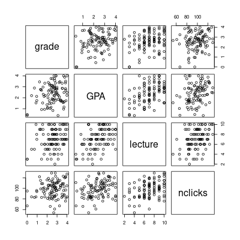

Dale Barr (University of Glasgow)
Mixed-effects workshop, March 3-4, 2022 (Basel)
General model for single-level data with \(m\) predictors:
\(Y_i = \beta_0 + \beta_1 X_{1i} + \beta_2 X_{2i} + \ldots + \beta_m X_{mi} + e_i \)
individual \(X\)s can be any combination of continuous and categorical predictors (and their interactions)
Each \(\beta_j\) is the partial effect of \(X_{j}\) holding all other \(X\)s constant
(NB: single-level data is rare in psychology)
Are lecture attendance and engagement with online materials associated with higher grades in statistics?
Does this relationship hold after controlling for overall GPA?
grades <-
read_csv("data/grades.csv",
col_types = "ddii")
# A tibble: 100 × 4 grade GPA lecture nclicks <dbl> <dbl> <int> <int> 1 2.40 1.13 6 88 2 3.67 0.971 6 96 3 2.85 3.34 6 123 4 1.36 2.76 9 99 5 2.31 1.02 4 66 6 2.58 0.841 8 99 7 2.69 4 5 86 8 3.05 2.29 7 118 9 3.21 3.39 9 98 10 2.24 3.27 10 115 # … with 90 more rows
library("corrr")
grades %>%
correlate() %>%
shave() %>%
fashion()
Correlation method: 'pearson'
Missing treated using: 'pairwise.complete.obs'
term grade GPA lecture nclicks
1 grade
2 GPA .25
3 lecture .24 .44
4 nclicks .16 .30 .36
grades %>%
pairs()

\(Y_i = \beta_0 + \beta_1 X_{1i} + \beta_2 X_{2i} + \ldots + \beta_m X_{mi} + e_i\)
lm(Y ~ X1 + X2 + ... + Xm, data)
my_model <- lm(grade ~ lecture + nclicks, grades)
summary(my_model)
Call:
lm(formula = grade ~ lecture + nclicks, data = grades)
Residuals:
Min 1Q Median 3Q Max
-2.21653 -0.40603 0.02267 0.60720 1.38558
Coefficients:
Estimate Std. Error t value Pr(>|t|)
(Intercept) 1.462037 0.571124 2.560 0.0120 *
lecture 0.091501 0.045766 1.999 0.0484 *
nclicks 0.005052 0.006051 0.835 0.4058
---
codes:
0 ‘***’ 0.001 ‘**’ 0.01 ‘*’ 0.05 ‘.’ 0.1 ‘ ’ 1
Residual standard error: 0.8692 on 97 degrees of freedom
Multiple R-squared: 0.06543, Adjusted R-squared: 0.04616
F-statistic: 3.395 on 2 and 97 DF, p-value: 0.03756
grades2 <- grades %>%
mutate(lecture_c = (lecture - mean(lecture)) / sd(lecture),
nclicks_c = (nclicks - mean(nclicks)) / sd(nclicks))
summary(lm(grade ~ lecture_c + nclicks_c, grades2))
Residuals:
Min 1Q Median 3Q Max
-2.21653 -0.40603 0.02267 0.60720 1.38558
Coefficients:
Estimate Std. Error t value Pr(>|t|)
(Intercept) 2.59839 0.08692 29.895 <2e-16 ***
lecture_c 0.18734 0.09370 1.999 0.0484 *
nclicks_c 0.07823 0.09370 0.835 0.4058
---
codes:
0 ‘***’ 0.001 ‘**’ 0.01 ‘*’ 0.05 ‘.’ 0.1 ‘ ’ 1
Residual standard error: 0.8692 on 97 degrees of freedom
Multiple R-squared: 0.06543, Adjusted R-squared: 0.04616
F-statistic: 3.395 on 2 and 97 DF, p-value: 0.03756
Is engagement (as measured by lecture attendance and downloads) positively associated with final course grade above and beyond student ability (as measured by GPA)?
Compare “base” model with control vars to a “bigger” model with control plus focal vars
base_model <- lm(grade ~ GPA, grades)
big_model <- lm(grade ~ GPA + lecture + nclicks, grades)
anova(base_model, big_model)
Analysis of Variance Table Model 1: grade ~ GPA Model 2: grade ~ GPA + lecture + nclicks Res.Df RSS Df Sum of Sq F Pr(>F) 1 98 73.528 2 96 71.578 2 1.9499 1.3076 0.2752
\(F(2, 96) = 1.31, p = .275\)
If \(p < \alpha\), bigger model is better.
update()base_model <- lm(grade ~ GPA, grades)
big_model <- update(base_model, . ~ . +lecture +nclicks)
anova(base_model, big_model)
Analysis of Variance Table Model 1: grade ~ GPA Model 2: grade ~ GPA + lecture + nclicks Res.Df RSS Df Sum of Sq F Pr(>F) 1 98 73.528 2 96 71.578 2 1.9499 1.3076 0.2752
Arbitrarily assign one of the two levels to 0; assign the other to 1.
NB: sign of the variable depends on the coding!
newvar = if_else(oldvar == "targetlevel", 1, 0)
See ?dplyr::if_else()